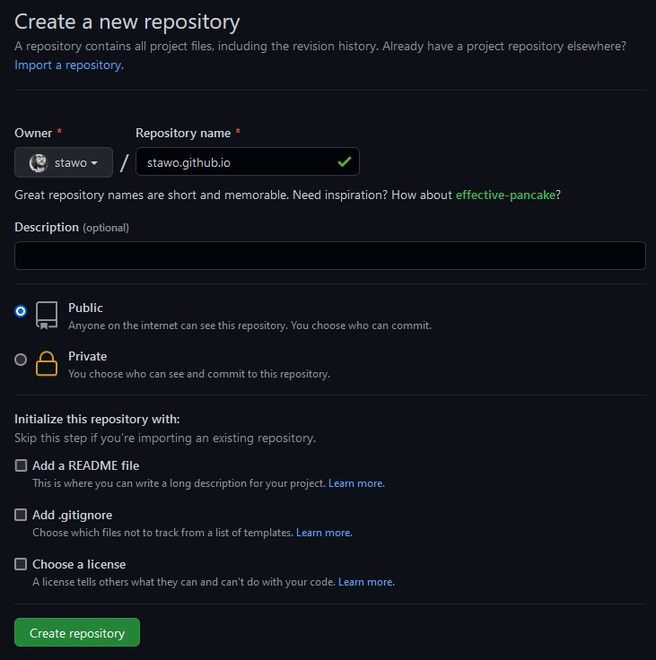
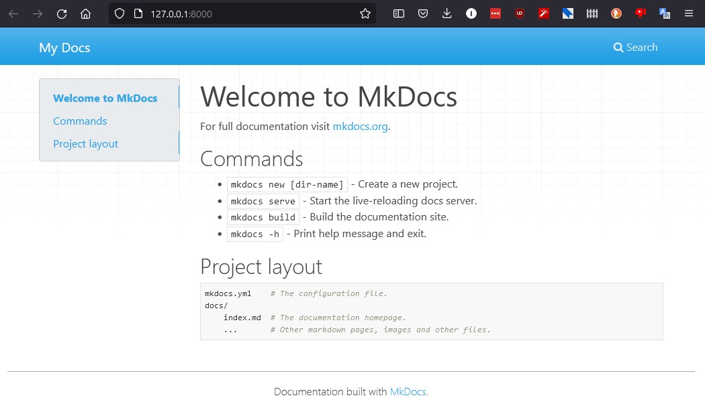
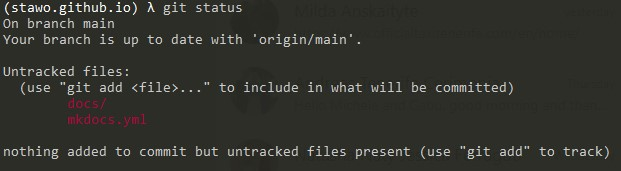
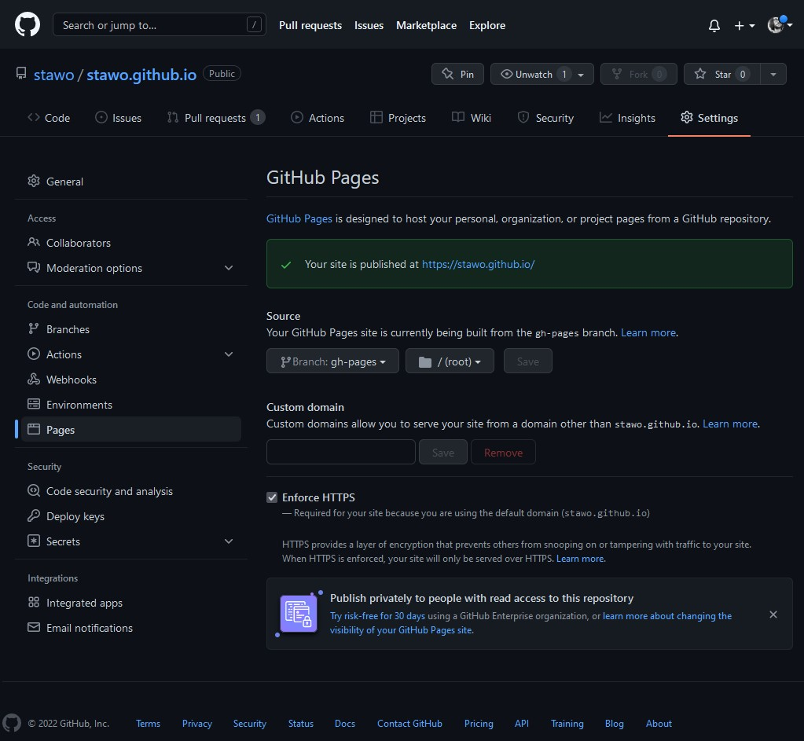

My lazy Dev dream for publishing!
Introduction
Many times I thought I would like a website where to share some of my knowledge, write some technical articles.
Not sure if anyone would read it, but at least I knew what I wanted from it:
- as simple to manage as possible
I'm not a designer (although I like design) and don't want to loose my mind in building and managing a website. - write like a dev
I would like to improve my coding skills, and write better documentation directly in my repos.
I thought "Why couldn't I write articles in the same way as I write code? Maybe simply using Markdown?" - own the source code
Although there are many platforms for blogging, I usually dislike the idea of not owning the "source code" of my articles, i.e., each platform uses different styles/codes and it's difficult to download everything you write
The solution I came up with is:
- use GitHub to store my site and use GitHub Pages to display it
- use MkDocs and MkDocs Material to write everything in Markdown and transform it into a nice looking website
- use GitHub Actions to automatize the deployment of changes and publishing of new articles
Here is a simple description of how this website was created and how I covered the aforementioned needs.
Initial Website
These are the steps I followed to have a working website with automatic updates when I write something.
Create an empty repository named {git username}.github.io.
For example, in my case it's stawo.github.io.

From the web interface, create the file .gitignore, just add a space in it (otherwise you cannot save it), and commit it.
This step is useful to initiate the repo and avoid having to do it locally on the computer later on.
(optional, but strongly suggested) Create conda env with mkdocs installed and activate it:
conda create --name stawo.github.io python=3.10 mkdocs-material
conda activate stawo.github.io
If you don't have/want conda, just run:
pip install mkdocs-material
Clone the repository on computer and access the root folder.
In my case, I opened the terminal, went to my repositories folder, and ran:
git clone https://github.com/stawo/stawo.github.io.git
cd stawo.github.io.git
Initialize the website with MkDocs by executing
mkdocs new .
and test it by running
mkdocs serve
This should give the following website at the address http://127.0.0.1:8000/ 
Build the website by running
mkdocs build
This generates the folder site/ with many files in it.
This is the final website that we want to publish, but not in this way.
Add site/ to .gitignore, so that we can build locally with mkdocs build to test things but avoid having the generated files in git.
We can test it by running git status and see that the generated files in the folder site/ do not appear. You should see only docs/ and mkdocs.yml

Create the folder .github/workflows and add file build_site.yml with following code (from https://github.com/marketplace/actions/deploy-mkdocs):
name: Publish site via GitHub Pages
on:
push:
branches:
- main
jobs:
build:
name: Deploy docs
runs-on: ubuntu-latest
steps:
- name: Checkout main
uses: actions/checkout@v2
- name: Setup Python
uses: actions/setup-python@v2
with:
python-version: 3.x
- name: Install libraries
- run: pip install mkdocs-material
- name: Generate docs
- run: mkdocs gh-deploy --force
Commit changes.
This will trigger the GitHub Actions.
If all goes fine, the branch gh-pages will be created with the mkdocs build of our website.
Check the progress of the pipeline on the repo website under Actions.
To publish the generated website, go on the GitHub website of the repo, go to Settings->Pages and select the branch gh-pages as the source.
The website will be visible at the address https://{git username}.github.io/.
For example, in my case it's https://stawo.github.io/.

Note: it takes a little bit of time for GitHub to pick up changes, so don't worry if you get an error, just retry to refresh the page.
Resources
- https://squidfunk.github.io/mkdocs-material
- https://squidfunk.github.io/mkdocs-material/publishing-your-site/#github-pages
Power-up: Blog!
Already with the previous set up you can publish things, but I'm lazy, and I would like that whenever I write an article (i.e., a Markdown file), this will automatically added and published without touching anything else.
To do that, we can use the plugin Mkdocs Blogging Plugin.
Install the plugin:
pip install mkdocs-blogging-plugin
To tell the plugin that everything in the folder articles should be considered an article and automatically publish it, modify mkdocs.yml and make it look something like this:
site_name: My Docs
site_url: https://stawo.github.io/
plugins:
- search
- blogging:
dirs:
- articles
Note: we added - search as we need to re-enable the search bar (see https://squidfunk.github.io/mkdocs-material/setup/setting-up-site-search/#built-in-search)
We also have to modify build_site.yml like this:
name: Publish site via GitHub Pages
on:
push:
branches:
- main
jobs:
build:
name: Deploy docs
runs-on: ubuntu-latest
steps:
- name: Checkout main
uses: actions/checkout@v2
with:
fetch-depth: 0
- name: Setup Python
uses: actions/setup-python@v2
with:
python-version: 3.x
- name: Install libraries
- run: pip install \
mkdocs-material \
mkdocs-blogging-plugin
- name: Generate docs
- run: mkdocs gh-deploy --force
And done!
You now have an automated blog